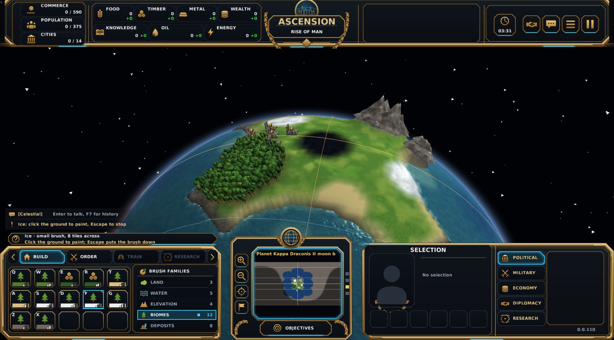
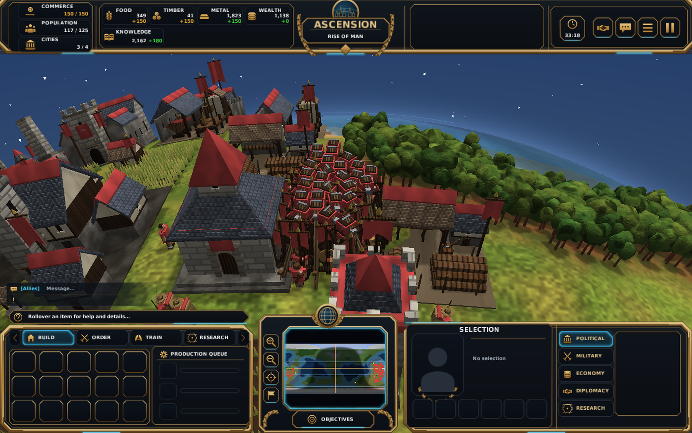
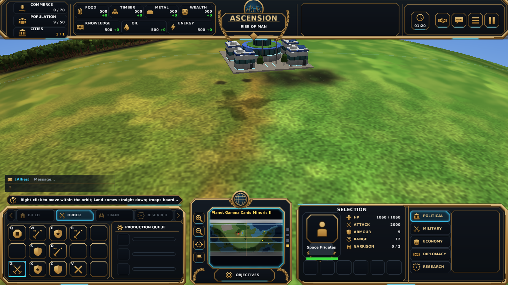
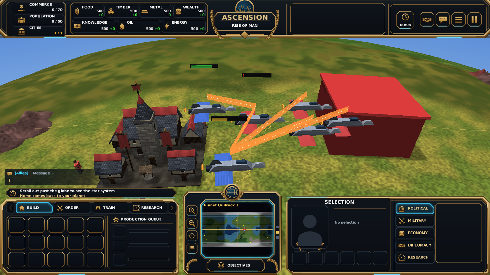
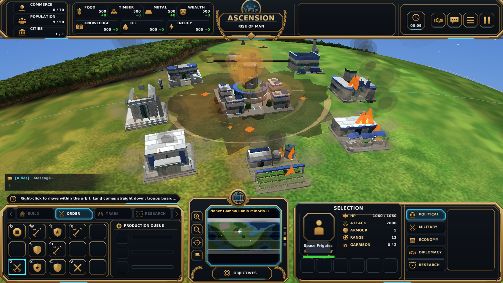
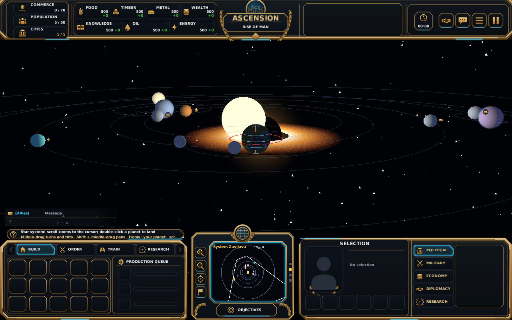
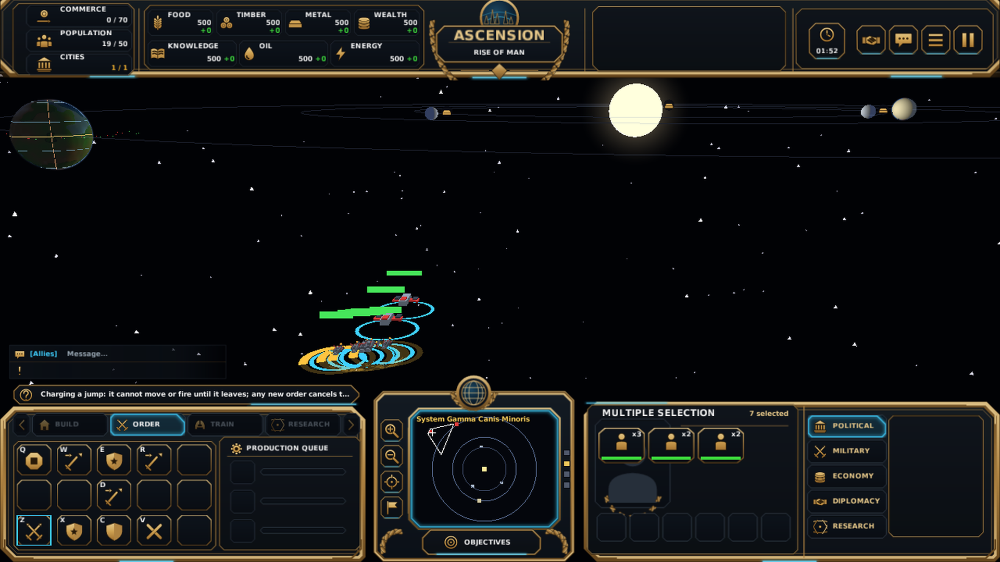
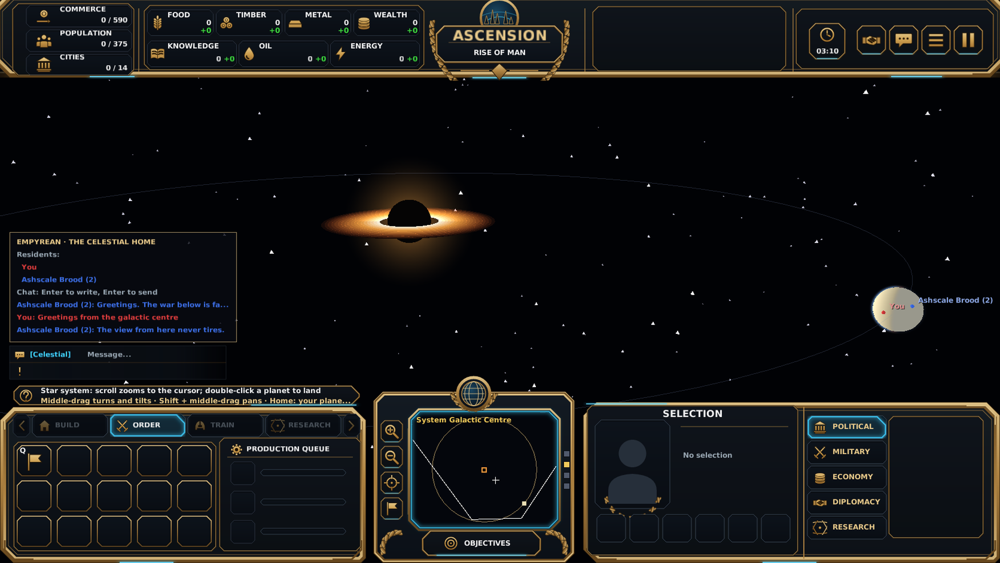
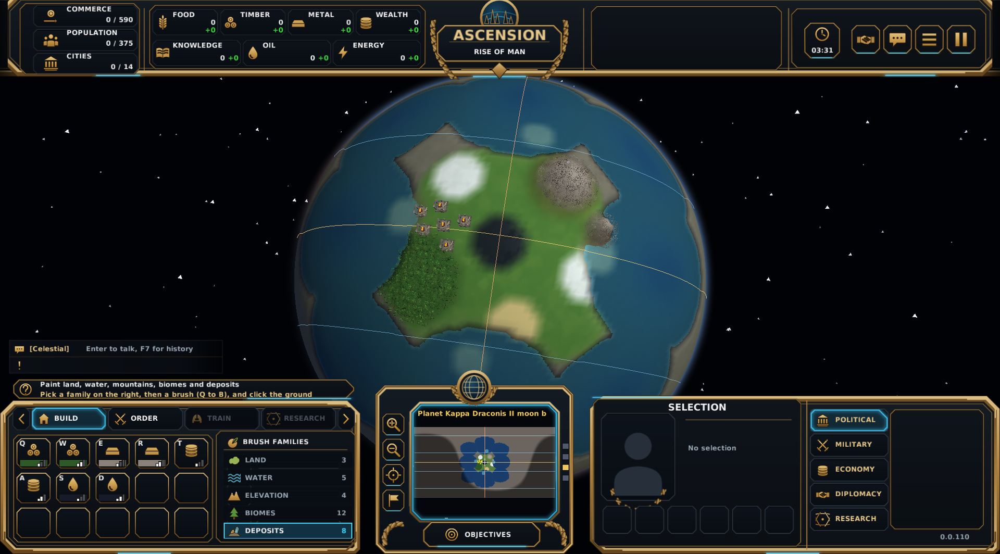
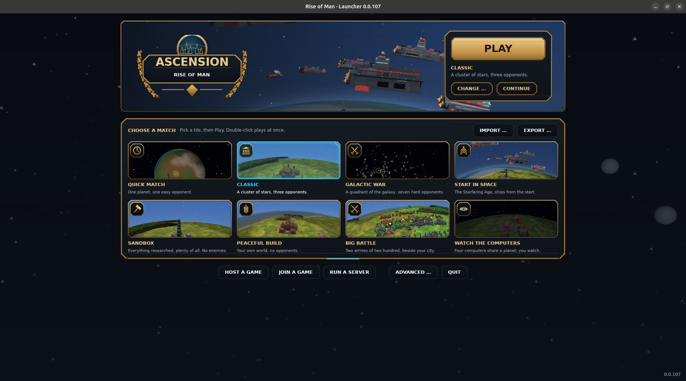

The 10 desktop screenshots of the import, in listing order. English interface, captured on Linux.

01-home-planet.png from app/docs/img/114-close.png
02-city-and-army.png from app/docs/img/ai-army-at-rally.png
03-modern-battle.png from app/docs/img/stains-soldiers-tanks.png
04-dogfight.png from app/docs/img/orbital-dogfight.png
05-orbital-strike.png from app/docs/img/bombard-impact.png
06-star-system.png from app/docs/img/solar-system-homes.png
07-charged-jump.png from app/docs/img/jump-fleet-charging.png
08-celestial-home.png from app/docs/img/ascension-celestial.png
09-painting-a-world.png from app/docs/img/114-paint.png
10-launcher.png from app/docs/img/112-home-1920.png